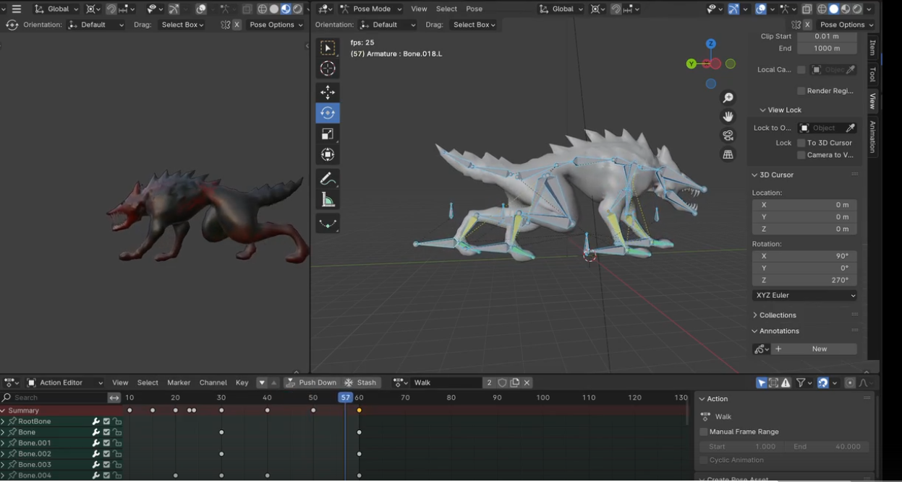
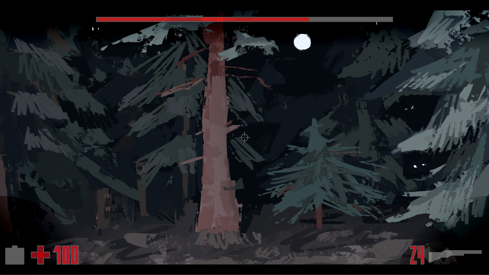

Интеграция модели монстра и создание контроллера поведения
На этом этапе мы импортировали первую 3D-модель монстра (волка) в игровой движок Unity. Была проведена
базовая настройка материалов и анимаций. Кроме того, написан первый вариант контроллера поведения
монстра: он умеет патрулировать территорию, реагировать на игрока и переключаться в боевой режим. Это
фундамент для будущей системы ИИ и взаимодействий.
📅 10 мая 2025
Работа в Blender: итоговая геометрия модели волка

Завершено моделирование волка в Blender. На скриншоте видно, как выглядит финальная геометрия до
текстурирования и риггинга. Уделили особое внимание силуэту и анатомии, чтобы сделать образ узнаваемым и
выразительным даже с расстояния.
📅 04 мая 2025
Концепт-арт: атмосфера мира и визуальные референсы

Художники предоставили первый набор концепт-артов, задающих визуальный стиль игры. На данном изображении
представлен один из главных референсов к окружению: преобладает мрачная палитра, выраженная структура
объектов и холодные тона. Это поможет команде 3D и VFX-артистов двигаться в едином направлении.